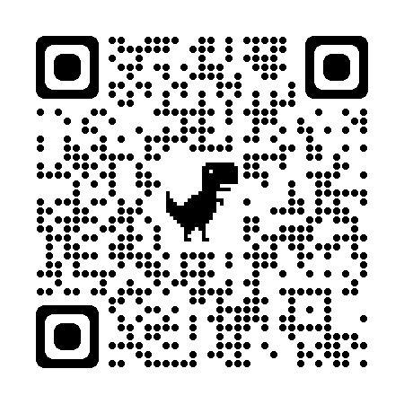

Down Events and Pointer Cancellation
bit.ly/downevents
Presented by Christina Adams
Digital Accessibility Software Engineer
@offsetChris on GitHub and Twitter
Go to exploration topic sectionExploration topic
Pointer down events get special attention in WCAG 2.1.
A down event refers to an event that is fired when a button on a pointer tool (ex. mouse), or keyboard key is pressed.
There are multiple ways to trigger a down-type event in JavaScript.
We will discuss the most common ones.
Go to events basics sectionWhat are Events?
- Events are actions or things that happen in the the DOM (Document Object Model == The skeleton of your website that the browser reads). The system notifies you of the event so you can respond to it in some way.
- There are lots of types of events.
- An event can be triggered by a number of user actions (mouse click, keyboard press, touch).
- An event can also be triggered by a number of programatic events (loading, error).
- Web events are defined by the browser, and accessed by a programming language (usually JavaScript) through an API. Each browser (potentially) handles events in different ways. There is general consensus on specs for handling common events across browser brands, but that is not always the case.
- Coders register an event handler when we want a function to run in response to interaction with a specific element.
Registering a simple event handler
- Events have properties coders can use to know details about the event such as Event.target
- Events have methods that affect the results of the event. For example event.preventDefault() cancels the default behavior of the event if it is cancelable.
- The demo below is a simple event handler that is registered for the click event of the button element and includes a function expression that is to be executed on this event.
A basic click event
button.addEventListener('click', function(){
hiddenContent.style.display = 'block';
});
Mousedown and Mouseup events
The click event previously is a shortcut that combines several different events
mouseup + keydown of enter key + keyup of spacebar + touchend on touchscreen
If we look at the mousedown and mouseup events we can see a singular event in more detail.
Mousedown and Mouseup demo
button.addEventListener('mousedown', function(){
hiddenContent1.style.display = 'block';
});
button.addEventListener('mouseup', function(){
hiddenContent2.style.display = 'block';
});
Keydown and Keyup events
We can do similar event handlers with individual keyboard keys using the keydown and keyup events.
Keydown and Keyup demo
button.addEventListener('keydown', function(){
if(event.keyCode === 32){
hiddenContent1.style.display = 'block';
}
});
button.addEventListener('keyup', function(){
if(event.keyCode === 32){
hiddenContent2.style.display = 'block';
}
});
Accessibility impact of down events
WCAG 2.1 criterion 2.5.2: Pointer event cancellation
- No Down Events
- Abort or Undo
- Up reversal
- Down event is essential (emulating keyboard key press)
Firing a function on the up event allows a user to cancel the event by dragging the pointer or finger off the target without firing the function.
If function is placed on the down event the function is fired immediately on the down event of the pointer or key with no way to cancel.
Go to keydown event issues sectionIssues with Keydown events
button.addEventListener('keyup', function(){
var log = document.createElement('p');
log.innerText = 'key up: '+ event.keyCode;
demo4Content.appendChild(log);
});
button.addEventListener('keyup', function(){
var log = document.createElement('p');
log.innerText = 'key up: '+ event.keyCode;
demo4Content.appendChild(log);
});
Hover can act like down on mobile
- CSS is usually used to define a hover (and hopefully focus) state of a clickable element.
- On mobile and other touch devices there is no :hover state.
- Natively on mobile :hover is fired on touchstart or the moment your finger or clicking implement is pressed on the element.
Hover CSS demo
To see this effect on a non-mobile device you will need to use a mobile emmulator. In Chrome this can be done in dev tools.
button.hover-effect:hover{
transform:scale(1.2);
}
button.hover-effect:hover + .showMe p{
display:block;
}
Issues with mobile touchstart events
For this demo you will need to emulate a mobile device. In chrome this can be done using the dev tools.
button.addEventListener('touchstart', function(){
this.style.background = 'limegreen';
hiddenContent.style.display = 'block';
});
Annoying Kittens — a practical, totally normal example
There is no escaping the kittens. Press and hold the mouse button or spacebar.
Questions?
bit.ly/downevents
Christina Adams — cada@siteimprove.com